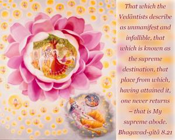
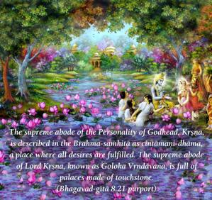
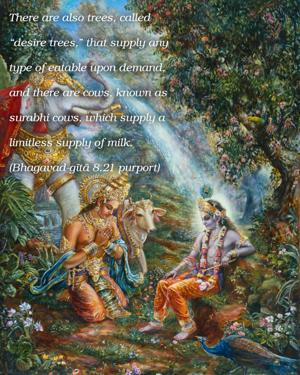
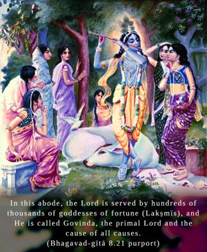
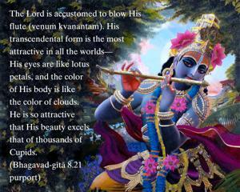

That which the Vedāntists describe as unmanifest and infallible, that which is known as the supreme destination, that place from which, having attained it, one never returns – that is My supreme abode.





The supreme abode of the Personality of Godhead, Kṛṣṇa, is described in the Brahma-saṁhitā as cintāmaṇi-dhāma, a place where all desires are fulfilled. The supreme abode of Lord Kṛṣṇa, known as Goloka Vṛndāvana, is full of palaces made of touchstone. There are also trees, called “desire trees,” that supply any type of eatable upon demand, and there are cows, known as surabhi cows, which supply a limitless supply of milk. In this abode, the Lord is served by hundreds of thousands of goddesses of fortune (Lakṣmīs), and He is called Govinda, the primal Lord and the cause of all causes. The Lord is accustomed to blow His flute (veṇuṁ kvaṇantam). His transcendental form is the most attractive in all the worlds – His eyes are like lotus petals, and the color of His body is like the color of clouds. He is so attractive that His beauty excels that of thousands of Cupids. He wears saffron cloth, a garland around His neck and a peacock feather in His hair. In the Bhagavad-gītā Lord Kṛṣṇa gives only a small hint of His personal abode, Goloka Vṛndāvana, which is the supermost planet in the spiritual kingdom. A vivid description is given in the Brahma-saṁhitā. Vedic literatures (Kaṭha Upaniṣad 1.3.11) state that there is nothing superior to the abode of the Supreme Godhead, and that that abode is the ultimate destination (puruṣān na paraṁ kiñcit sā kāṣṭhā paramā gatiḥ). When one attains to it, he never returns to the material world. Kṛṣṇa’s supreme abode and Kṛṣṇa Himself are nondifferent, being of the same quality. On this earth, Vṛndāvana, ninety miles southeast of Delhi, is a replica of that supreme Goloka Vṛndāvana located in the spiritual sky. When Kṛṣṇa descended on this earth, He sported on that particular tract of land known as Vṛndāvana, comprising about 168 square miles in the district of Mathurā, India.